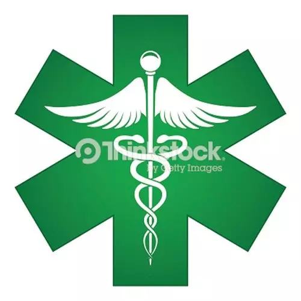

|  | Protocolo covid-19 para atencion domiciliaria |
Las
visitas medicas se solicitan por telefono (puede hacerlo gratis por
whatsapp). El medico categoriza la visita medica, para verificar que
sea de baja complejidad.
La
visita medica dentro de las 2hs del llamado (solo C.A.B.A). El paciente
debe permanecer en un ambiente con ventilacion natural (abrir
ventanas), y colocarse barbijo para la atencion medica. Podran
permanecer hasta 2 personas, mas el medico (evitar hacinamiento). El
medico ingresara al domicilio con elementos de EPP (Equipo de
Proteccion Personal): camisolin descartable (de ser necesario), y
barbijo de biosegiridad N95. La desinfeccion se realizara con
lavado de manos con
agua corriente y jabon liquido (preferentemente), y/o con solucion
sanitizante de alcohol 70%.
Todo el instrumental usado sera desinfectado con una solucion sanitizante de alcohol 70%. Queda prohibido el uso
de aire acondicionado y/o ventiladores al momento de la atencion, ya
que estos aerosolizan las secreciones y aumentan el riesgo de
transmision del virus.
Criterios de hisopado (normativa del G.C.B.A - Diciembre de 2022):
Completar esquemas de vacunacion covid-19 (4 dosis es el esquema
completo, y 5 dosis para pacientes de riesgo o personal sanitario).
Solo deben hisoparse pacientes de cualquier edad con comorbilidades
(diabetes, HTA, cancer, inmunosuprimidos, por ej.), y/o personal
sanitario, docentes, y personal que trabaja con comunidades cerradas,
que tengan sintomas compatibles. Ver centros de hisopado en la pagina: www.buenosaires.gob.ar
|
|